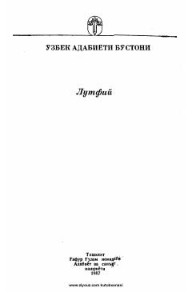

SSLutfiyning tanlangan g'azallar, ruboiylar va «Gul va Navro'z» dostoni jamlangan mumtoz she'riyat to'plami.
Ushbu kitob buyuk o'zbek shoiri Lutfiyning mashhur she'rlari, g'azallari, ruboiylari, qit'alari, tuyuqlari hamda «Gul va Navro'z» dostonini o'z ichiga oladi. O'zbek mumtoz adabiyotining nodir namunalari jamlangan ushbu to'plam kitobxonlarga shoir ijodining yorqin qirralarini ochib beradi.